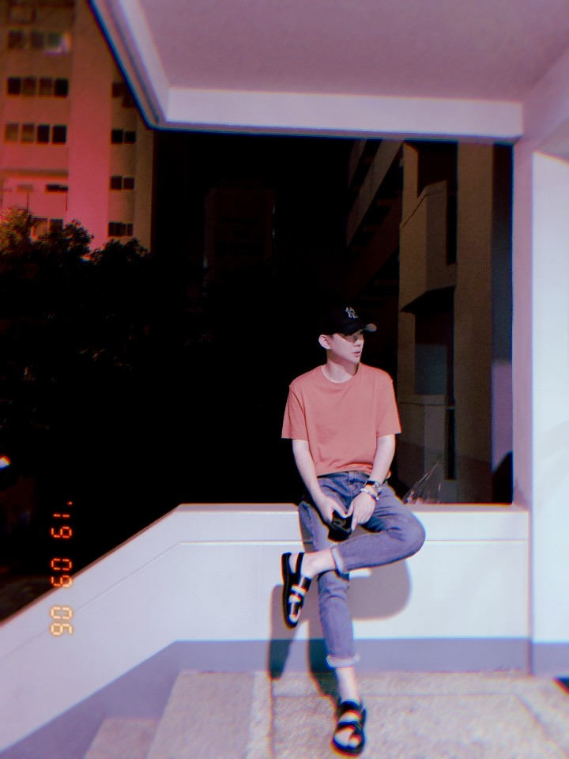

Juyeong Kang
Digital Media Artist
My passion throughout the digital art and digital world make my bold exploration of digital media artworks possible.
The most critical part of my work is developing significant concepts along the environment.
The concept's importance is an important factor for humans and creating a variety of digital media art, and it tells me the way I see my digital media art and my art style.
Humans are given special capability, thinking in a higher dimension and feeling the beauty, which a designated computer program cannot do. Thus, I focus on cultivating the beauty that only humans can feel. I am flexible and unique in expressing my originality in the turbulent digital media arts era.